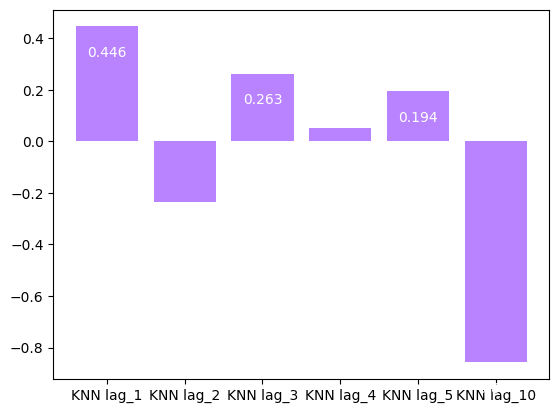
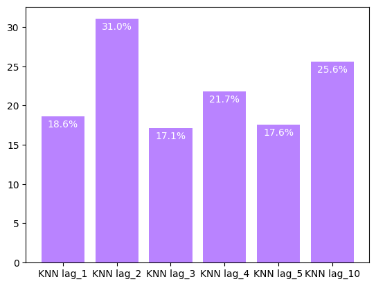
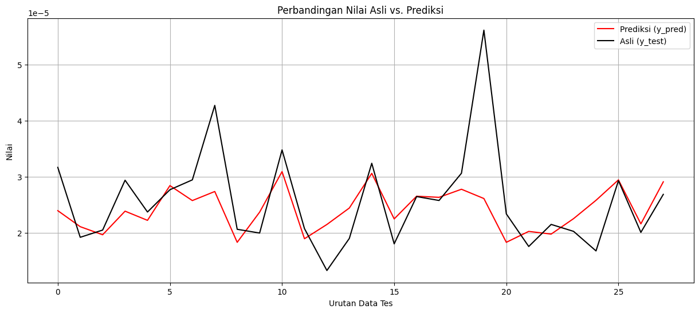

Modeling dengan KNN Regression#
Pengertian#
K-Nearest Neighbors (KNN) Regression adalah metode regresi non-parametrik yang memprediksi nilai output berdasarkan kedekatan (jarak) dengan data lain dalam ruang fitur.
Berbeda dengan model berbasis fungsi matematis, KNN tidak membuat asumsi bentuk hubungan antar variabel — melainkan menggunakan data tetangga terdekat untuk membuat prediksi.
import pandas as pd
import joblib
from sklearn.neighbors import KNeighborsRegressor
from sklearn.model_selection import train_test_split
from sklearn.preprocessing import StandardScaler
from sklearn.metrics import mean_absolute_percentage_error
import warnings
from sklearn.ensemble import RandomForestRegressor
warnings.filterwarnings('ignore')
def create_columns(lag=5):
columns = []
for i in range(lag, lag - lag, -1):
columns.append("lag_" + str(i))
columns.append("target")
return columns
def fitur_column(lag=5):
columns = []
for i in range(lag, lag - lag, -1):
columns.append("lag_" + str(i))
return columns
def create_supervised_data(data, lag=5):
data_supervised = []
for i in range(lag, len(data)):
row = data[i-lag:i+1]
data_supervised.append(row)
columns = create_columns(lag)
supervised_df = pd.DataFrame(data_supervised, columns=columns)
return supervised_df
Disini saya modeling dengan 6 dataset, data dengan lag_1 - lag_5, lag_10
lalu akan saya bandingkan akurasi setiap model
Saya normalisasi data dengan StandardScaler dari sklearn
Model dengan data Lag 1#
supervised_df = pd.read_csv("no2_bojonegoro_post/supervised_data_lag_1.csv")
X = supervised_df[fitur_column(1)]
scaler = StandardScaler()
y = supervised_df["target"]
X_train, X_test, y_train, y_test_1 = train_test_split(X, y, test_size=0.2, random_state=42)
# Normalisasi
X_train = scaler.fit_transform(X_train)
X_train = pd.DataFrame(X_train, columns=X.columns)
model_lag1 = KNeighborsRegressor(n_neighbors=3)
model_lag1.fit(X_train, y_train)
X_test_scaled = scaler.transform(X_test)
y_pred_1 = model_lag1.predict(X_test_scaled)
mape_lag1 = mean_absolute_percentage_error(y_test_1, y_pred_1)
print(mape_lag1)
score_lag1 = model_lag1.score(X_test_scaled, y_test_1)
score_lag1
0.18608843298404967
0.44624625499567816
X_test
| lag_1 | |
|---|---|
| 108 | 0.000019 |
| 67 | 0.000024 |
| 31 | 0.000024 |
| 119 | 0.000042 |
| 42 | 0.000021 |
| 12 | 0.000022 |
| 81 | 0.000028 |
| 69 | 0.000029 |
| 104 | 0.000020 |
| 109 | 0.000020 |
| 113 | 0.000022 |
| 56 | 0.000041 |
| 66 | 0.000018 |
| 19 | 0.000020 |
| 132 | 0.000020 |
| 78 | 0.000018 |
| 11 | 0.000017 |
| 27 | 0.000033 |
| 127 | 0.000027 |
| 110 | 0.000020 |
| 36 | 0.000018 |
| 118 | 0.000028 |
| 60 | 0.000031 |
| 4 | 0.000014 |
| 131 | 0.000016 |
| 26 | 0.000035 |
| 138 | 0.000025 |
| 96 | 0.000022 |
joblib.dump(scaler, 'model/scaler_lag_1.pkl')
joblib.dump(model_lag1, 'model/knn_lag_1.pkl')
['model/knn_lag_1.pkl']
Model dengan data Lag 2#
supervised_df = pd.read_csv("no2_bojonegoro_post/supervised_data_lag_2.csv")
X = supervised_df[fitur_column(2)]
scaler = StandardScaler()
y = supervised_df["target"]
X_train, X_test, y_train, y_test = train_test_split(X, y, test_size=0.2, random_state=42)
# Normalisasi
X_train = scaler.fit_transform(X_train)
X_train = pd.DataFrame(X_train, columns=X.columns)
X_test_scaled = scaler.transform(X_test)
model_lag2 = KNeighborsRegressor(n_neighbors=3)
model_lag2.fit(X_train, y_train)
y_pred = model_lag2.predict(X_test_scaled)
mape_lag2 = mean_absolute_percentage_error(y_test, y_pred)
print(mape_lag2)
score_lag2 = model_lag2.score(X_test_scaled, y_test)
score_lag2
0.31032123136478557
-0.23401973218077954
joblib.dump(scaler, 'model/scaler_lag_2.pkl')
joblib.dump(model_lag2, 'model/knn_lag_2.pkl')
['model/knn_lag_2.pkl']
Model dengan Lag 3#
supervised_df = pd.read_csv("no2_bojonegoro_post/supervised_data_lag_3.csv")
X = supervised_df[fitur_column(3)]
scaler = StandardScaler()
y = supervised_df["target"]
X_train, X_test, y_train, y_test_3 = train_test_split(X, y, test_size=0.2, random_state=42)
# Normalisasi
X_train = scaler.fit_transform(X_train)
X_train = pd.DataFrame(X_train, columns=X.columns)
X_test_scaled = scaler.transform(X_test)
model_lag3 = KNeighborsRegressor(n_neighbors=3)
model_lag3.fit(X_train, y_train)
y_pred_3 = model_lag3.predict(X_test_scaled)
mape_lag3 = mean_absolute_percentage_error(y_test_3, y_pred_3)
print(mape_lag3)
score_lag3 = model_lag3.score(X_test_scaled, y_test_3)
score_lag3
0.17073073602851382
0.26308481145830265
joblib.dump(scaler, 'model/scaler_lag_3.pkl')
joblib.dump(model_lag3, 'model/knn_lag_3.pkl')
['model/knn_lag_3.pkl']
X_test
| lag_3 | lag_2 | lag_1 | |
|---|---|---|---|
| 89 | 0.000031 | 0.000022 | 0.000024 |
| 105 | 0.000012 | 0.000014 | 0.000017 |
| 12 | 0.000022 | 0.000027 | 0.000019 |
| 26 | 0.000035 | 0.000033 | 0.000032 |
| 64 | 0.000020 | 0.000018 | 0.000018 |
| 67 | 0.000024 | 0.000029 | 0.000029 |
| 65 | 0.000018 | 0.000018 | 0.000024 |
| 117 | 0.000018 | 0.000028 | 0.000042 |
| 108 | 0.000019 | 0.000020 | 0.000020 |
| 73 | 0.000027 | 0.000025 | 0.000022 |
| 85 | 0.000025 | 0.000025 | 0.000039 |
| 45 | 0.000018 | 0.000024 | 0.000022 |
| 76 | 0.000020 | 0.000022 | 0.000018 |
| 68 | 0.000029 | 0.000029 | 0.000028 |
| 31 | 0.000024 | 0.000028 | 0.000037 |
| 42 | 0.000021 | 0.000021 | 0.000013 |
| 27 | 0.000033 | 0.000032 | 0.000029 |
| 19 | 0.000020 | 0.000024 | 0.000027 |
| 86 | 0.000025 | 0.000039 | 0.000035 |
| 56 | 0.000041 | 0.000027 | 0.000029 |
| 109 | 0.000020 | 0.000020 | 0.000021 |
| 4 | 0.000014 | 0.000029 | 0.000014 |
| 111 | 0.000021 | 0.000023 | 0.000022 |
| 36 | 0.000018 | 0.000021 | 0.000011 |
| 104 | 0.000020 | 0.000012 | 0.000014 |
| 136 | 0.000020 | 0.000019 | 0.000025 |
| 16 | 0.000035 | 0.000036 | 0.000028 |
| 18 | 0.000028 | 0.000020 | 0.000024 |
Model dengan Lag 4#
supervised_df = pd.read_csv("no2_bojonegoro_post/supervised_data_lag_4.csv")
X = supervised_df[fitur_column(4)]
scaler = StandardScaler()
y = supervised_df["target"]
X_train, X_test, y_train, y_test = train_test_split(X, y, test_size=0.2, random_state=42)
# Normalisasi
X_train = scaler.fit_transform(X_train)
X_train = pd.DataFrame(X_train, columns=X.columns)
X_test_scaled = scaler.transform(X_test)
model_lag4 = KNeighborsRegressor(n_neighbors=3)
model_lag4.fit(X_train, y_train)
y_pred = model_lag4.predict(X_test_scaled)
mape_lag4 = mean_absolute_percentage_error(y_test, y_pred)
print(mape_lag4)
score_lag4 = model_lag4.score(X_test_scaled, y_test)
score_lag4
0.21747566241332345
0.05050057936960073
joblib.dump(scaler, 'model/scaler_lag_4.pkl')
joblib.dump(model_lag2, 'model/knn_lag_4.pkl')
['model/knn_lag_4.pkl']
Model dengan Lag 5#
print((0.000035))
3.5e-05
supervised_df = pd.read_csv("no2_bojonegoro_post/supervised_data_lag_5.csv")
X = supervised_df[fitur_column(5)]
scaler = StandardScaler()
y = supervised_df["target"]
X_train, X_test, y_train, y_test = train_test_split(X, y, test_size=0.2, random_state=42)
# Normalisasi
X_train = scaler.fit_transform(X_train)
X_train = pd.DataFrame(X_train, columns=X.columns)
X_test_scaled = scaler.transform(X_test)
model_lag5 = KNeighborsRegressor(n_neighbors=3)
model_lag5.fit(X_train, y_train)
y_pred = model_lag5.predict(X_test_scaled)
mape_lag5 = mean_absolute_percentage_error(y_test, y_pred)
print(mape_lag5)
score_lag5 = model_lag5.score(X_test_scaled, y_test)
score_lag5
0.1755237153574441
0.193686129077966
joblib.dump(scaler, 'model/scaler_lag_5.pkl')
joblib.dump(model_lag2, 'model/knn_lag_5.pkl')
['model/knn_lag_5.pkl']
Model dengan Lag 10#
supervised_df = pd.read_csv("no2_bojonegoro_post/supervised_data_lag_10.csv")
X = supervised_df[fitur_column(10)]
scaler = StandardScaler()
y = supervised_df["target"]
X_train, X_test, y_train, y_test = train_test_split(X, y, test_size=0.2, random_state=42)
# Normalisasi
X_train = scaler.fit_transform(X_train)
X_train = pd.DataFrame(X_train, columns=X.columns)
X_test_scaled = scaler.transform(X_test)
model_lag10 = KNeighborsRegressor(n_neighbors=3)
model_lag10.fit(X_train, y_train)
y_pred = model_lag10.predict(X_test_scaled)
mape_lag10 = mean_absolute_percentage_error(y_test, y_pred)
print(mape_lag10)
score_lag10 = model_lag10.score(X_test_scaled, y_test)
score_lag10
0.2555303000186166
-0.8575539936085821
rf_clf = RandomForestRegressor(random_state=42, n_estimators=300)
scaler = StandardScaler()
supervised_df = pd.read_csv("no2_bojonegoro_post/supervised_data_lag_5.csv")
X = supervised_df[fitur_column(5)]
y = supervised_df["target"]
X_train, X_test, y_train, y_test = train_test_split(X, y, train_size=0.8, random_state=42)
X_train = scaler.fit_transform(X_train)
rf_clf.fit(X_train, y_train)
y_pred = rf_clf.predict(scaler.transform(X_test))
mean_absolute_percentage_error(y_pred, y_test)
0.16738940047558856
joblib.dump(scaler, 'model/scaler_lag_10.pkl')
joblib.dump(model_lag2, 'model/knn_lag_10.pkl')
['model/knn_lag_10.pkl']
Evalusi dengan \(R^2\) dan MAPE setiap model dengan lag berbeda#
Evaluasi dengan Metrik \(R^2\)#
import matplotlib.pyplot as plt
score = [score_lag1, score_lag2, score_lag3, score_lag4, score_lag5, score_lag10]
label = ["KNN lag_1", "KNN lag_2", "KNN lag_3", "KNN lag_4", "KNN lag_5", "KNN lag_10"]
plt.bar(label, score, color=["#b983ff"])
for i, v in enumerate(score):
plt.text(i, v - 0.1, f"{v:.3}", va="center", ha="center", color="white", fontsize=10)
plt.show()

Evaluasi dengan Metrik MAPE#
mape = [mape_lag1, mape_lag2, mape_lag3, mape_lag4, mape_lag5, mape_lag10]
mape = [i * 100 for i in mape]
label = ["KNN lag_1", "KNN lag_2", "KNN lag_3", "KNN lag_4", "KNN lag_5", "KNN lag_10"]
plt.bar(label, mape, color=["#b983ff"])
for i, v in enumerate(mape):
plt.text(i, v - 1, f"{v:.3}%", va="center", ha="center", color="white", fontsize=10)
plt.show()

GRAFIK Model Dengan LAG 1#
import matplotlib.pyplot as plt
import pandas as pd # Asumsi pd sudah di-import
# y_pred_1 adalah array, jadi ini sudah benar
lag_3_pred = pd.DataFrame(y_pred_3, columns=["pred"])
# PERBAIKAN: Gunakan .values untuk mengambil array NumPy-nya saja
# Ini akan membuang indeks asli dari y_test_1
# Sehingga saat jadi DataFrame, ia akan mendapat indeks baru [0, 1, 2, ...]
lag_3_test = pd.DataFrame(y_test_3.values, columns=["pred"])
# ------ Kode Plotting ------
plt.figure(figsize=(15, 6)) # Tambahkan ukuran agar lebih jelas
# Tambahkan 'label' untuk legenda
plt.plot(lag_3_pred.index, lag_3_pred["pred"], color="red", label="Prediksi (y_pred)")
plt.plot(lag_3_test.index, lag_3_test["pred"], color="black", label="Asli (y_test)")
plt.title("Perbandingan Nilai Asli vs. Prediksi")
plt.xlabel("Urutan Data Tes")
plt.ylabel("Nilai")
plt.legend() # Tampilkan legenda
plt.grid(True)
plt.show()
